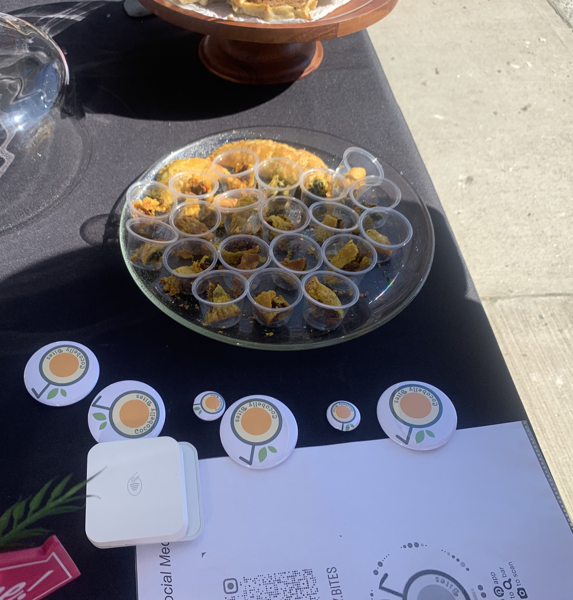
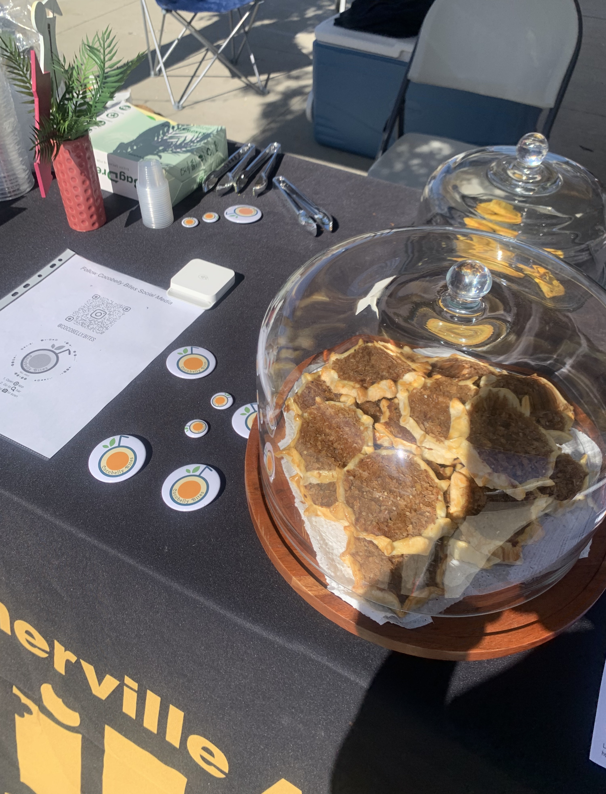
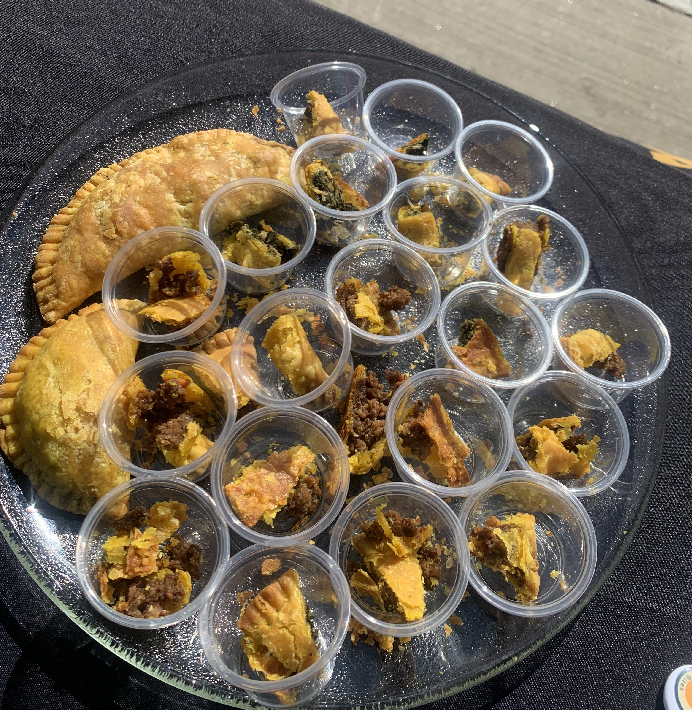
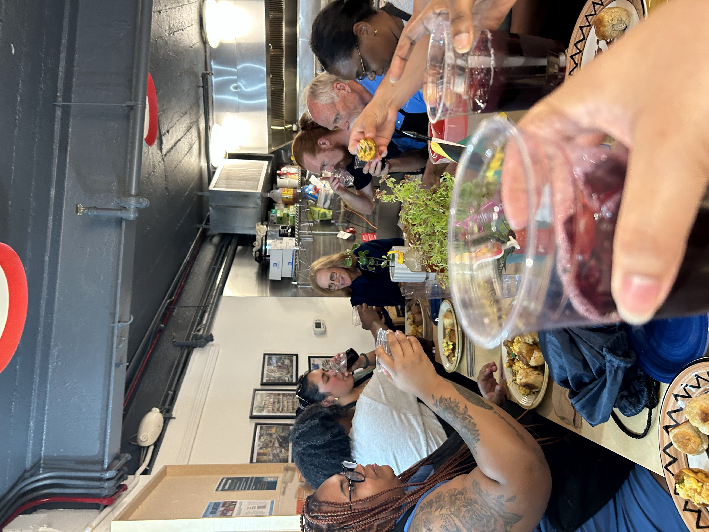
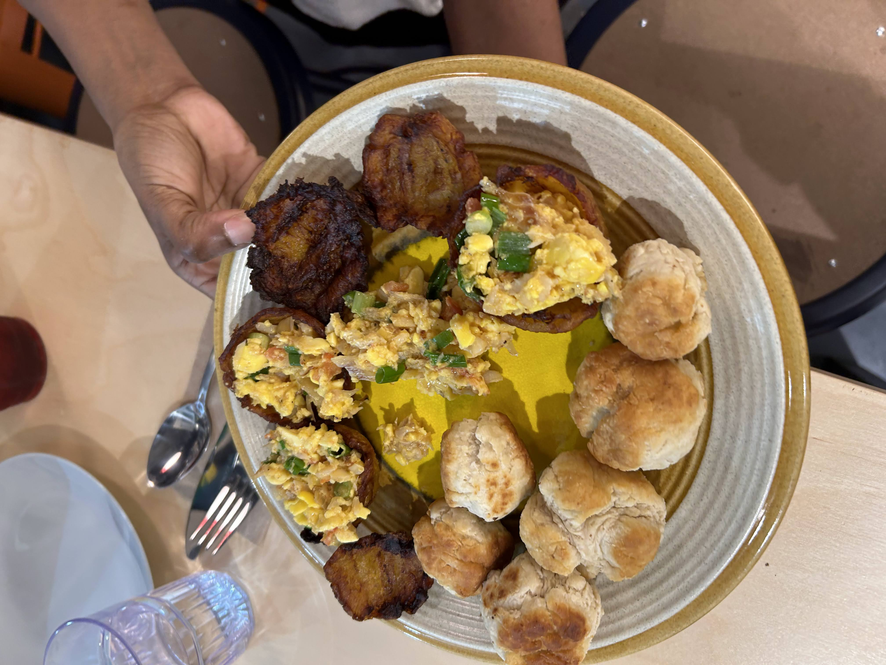

May 27th: Somerville Farmer’s Market
Introducing the market shoppers to our handmade Jamaican bites on a nice sunny Saturday. Our samples were well received and a THANK YOU to everyone that took the time to stopped by, have a sample and chat.



May 16th: Cooking Class
A group of people coming together at Nibble Kitchen to discuss Jamaica’s food and culture while enjoying the island’s national dish of ackee and saltfish craddle in a plaintain cup with a side of fried dumplings

